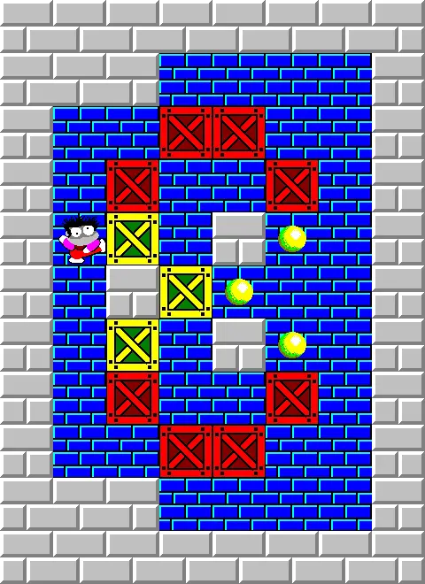

Projet
Présentation du projet
Ce projet était dans le cadre d'une Situation d'apprentisage et d'évaluation (SAE) dont le but est d'acquérir la capacité
de pouvoir proposer des applications informatiques optimisées en fonction de critères spécifiques comme le temps d’exécution, la précision
ou encore la consommation de ressources.
Plus concrètement, l'objectif de ce projet est qu'en partant d'un besoin exprimé par un client, de réaliser une implémentation de différentes approches
de résolution puis de les comparer en effectuants des mesures de performances simples.
Cette compétence permet de découvrir l'importance des critères de performances dans le cadre du développement d'une application.
Le projet consistait à programmer une automatisation du jeu du Sokoban (cf Compétence 1 ) à partir d'une liste de déplacement puis
d'arriver à optimiser le nombre de déplacements du personnage en respectant des indicateurs de performances précis (le temps et l'utilisation de ressources).
POur se faire, on a dû le programmer en C.

Déroulé du projet
Dans la première version, je devais programmer le Sokoban autonome en language C et donc mon programme devait :
- Demander à l’utilisateur le nom d’une partie (fichier .sok)
- Demander à l’utilisateur le nom d’une suite de déplacements (fichier .dep)
- "Faire jouer" la partie : chaque déplacement doit être visible à l’écran et une pause entre les déplacements doit être prévue, suffisamment longue pour pouvoir suivre facilement le déroulement
- Afficher le bilan
Bilan du projet
Si je devais faire le bilan de ce projet, je dirais qu'il m'a permis de consolider mes bases dans le language C mais surtout qu'il m'a appris
l'importance des choix de mes algorithmes dans le résolution d'un problème donné. Cependant, je considère ce projet comme raté car la principale fonction qui était l'optimisation ne fonctionne pas du tout.
Je pense ainsi qu'il faut que je revois le principe de l'optimisation car je pense ne pas avoir réelemment compris ce concept et que je m'entraine d'avantage sur des algorithmes similaires.
Je considère cette compétence comme non validé.